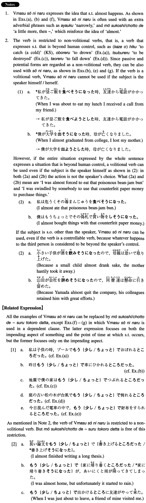

←
DoJG
→
そうになる
(I. 409)
Example sentences
(ks).
冷たい雨の中を傘もささないで歩いていたら、風邪を引き
そうになった
。
While walking in the cold rain without using an umbrella, I almost caught a cold.
(a).
私は子供の時、プールで危うく溺れ
そうになった
ことがある。
When I was a child I almost drowned in a swimming pool.
(b).
昨日もうちょっとで車にひかれ
そうになった
。
Yesterday I almost got run over by a car.
(c).
地震で僕の家は潰れ
そうになった
。
My house almost got destroyed by an earthquake.
(d).
庭の古い松の木が台風で倒れ
そうになった
。
An old pine tree in the yard almost fell down in the typhoon.
(e).
今日混んだ電車の中で、財布をすられ
そうになった
。
Today in a crowded train I almost got my purse pickpocketed.
(f).
数学の試験で最後の問題がもう少しで解け
そうになった
時に、時間切れになってしまった。
In the math exam, I was almost able to solve the last problem when the time was up.
(g).
やっと日本へ行け
そうになった
時に、母が病気になってしまった。
When I was almost able to go to Japan my mother got ill.
Formation
Vます
そうになる
忘れ
そうになる
Someone almost forgets something
わかり
そうになる
Someone almost understands something
失職し
そうになる
Someone almost loses his/her job
